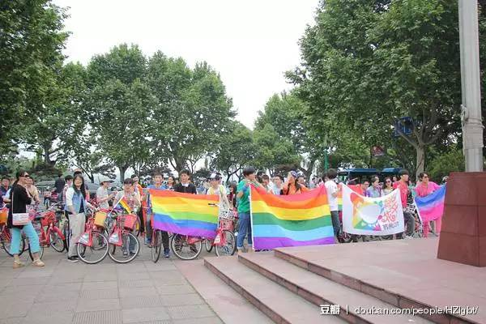
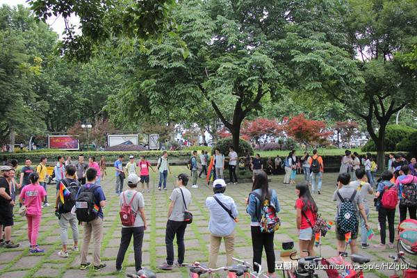

伴艾同行 消除污名 ENTER TITLE
自1983年起，5月的第3个星期天被定为“国际艾滋病烛光纪念日”，全球一百多个国家和地区每年都会在这一天举办纪念活动，缅怀因艾滋病而离世的人们。1990年5月17日世界卫生组织 (WHO) 将 “同性恋”从精神病名册中除名，这一天也成为“国际不再恐同日”。
2015年南昌骑行爱好者以及多名防艾宣传志愿者、艾滋病感染者刘九龙发起第一次“伴艾骑行”活动，跨越多个城市。向阳花开自2011年5.17国际不再恐同日期间举办第一次彩虹骄傲骑行以来，至今连续举办5次。2016年“国际艾滋病烛光纪念日”及“国际不再恐同日”到来之际，我们将联合举办本次骑行活动。
长期以来“同性恋”与“艾滋”由于各种原因被迫“捆绑”在一起，社会的偏见带来双重的污名。今年的骄傲骑行，两个群体将主动 “捆绑”（好像哪里不对……）并直面污名，将消除艾滋反歧视与消除同性恋污名结合在一起。我们“捆绑”不是因为二者有必要联系，而是因为
我们有共同的平等诉求，我们不愿因污名而在阴暗中生活，也不会因为公众的误解而放弃呼吁创建一个友善的环境。既然你们误解了，那就让我们来大胆地作出解释吧！


9:00~9:30 志愿者集合 9:30~10:00 活动人员签到，画彩妆，义卖 10:00~11:30 编队骑行 11:30~13:00 聚餐、义卖
骑行路线
总长约10公里，主要经停地点：少年宫（起点，9点集合）>断桥>省博物馆>复旦光华牌坊>西泠桥>岳庙>苏堤>苏东坡像>太子湾>杭州花圃>浙大玉泉正门>青芝坞（终点）
骑行队员报名：
骑行领队
骑行参与者
志愿者报名
签到 2人
摄影 1-2人
义卖 2人
彩绘 3人
视频制作 1人
点击阅读全文马上报名参与吧！
点击“阅读全文”，参与报名